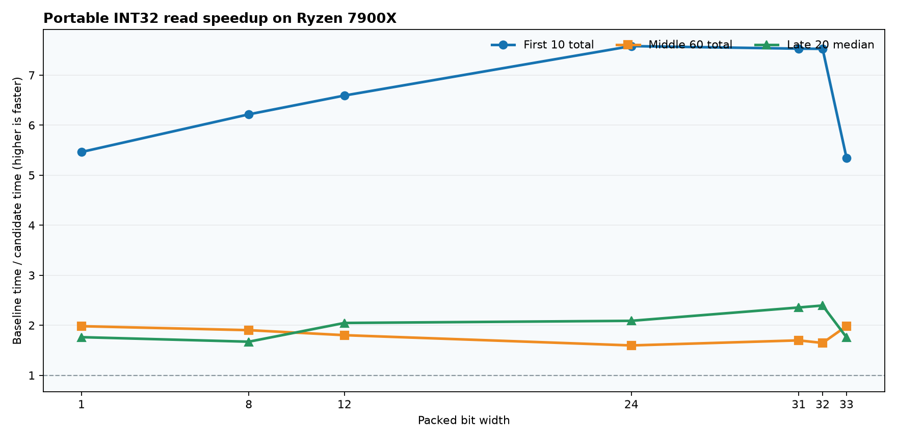

Portable INT32 all-width candidate
September 29, 2026 · Ryzen 7900X · published Plank public API · AVX2 and AVX-512 disabled · one isolated CPU · 100 ordered ColdStart iterations per width.
Every row below measures exact draft PR #153 head 6920dca against master 60c4749. Width 33 uses alternating INT32 extremes; other widths use the configurable sequence. Download all ordered samples (JSON).

Before and after, each iteration
Each panel is one benchmark: master (blue) and the measured PR revision (orange), in run order. Time per iteration uses a logarithmic axis so first-use and later reads remain visible. Individual charts also show iterations 21–100 on a linear axis.

Individual charts: Width 1 · Width 8 · Width 12 · Width 24 · Width 31 · Width 32 · Width 33 · Mixed widths 1–22


| Width | First ten sum, candidate / base | Middle sixty sum | Late twenty median |
|---|---|---|---|
| 1 | 211.2 / 1154.0 | 1188.3 / 2354.3 | 19.8 / 34.8 |
| 8 | 224.6 / 1396.0 | 1264.9 / 2405.7 | 21.0 / 35.2 |
| 12 | 237.7 / 1566.9 | 1342.5 / 2419.1 | 17.4 / 35.6 |
| 24 | 266.7 / 2021.4 | 1513.8 / 2417.1 | 17.4 / 36.4 |
| 31 | 281.6 / 2120.6 | 1573.8 / 2672.3 | 17.2 / 40.5 |
| 32 | 259.2 / 1950.6 | 1478.5 / 2434.3 | 15.1 / 36.3 |
| 33 | 213.3 / 1140.2 | 1200.4 / 2381.0 | 20.0 / 35.1 |
Mixed widths and binary size
With 22 columns using packed widths 1–22, first ten reads totaled 1563.7 ms baseline versus 242.3 ms candidate; the late twenty medians were 35.39 versus 17.35 ms. The JSON includes all ordered samples.
Matched Release Plank.dll builds: 752,128 → 782,848 bytes (+30,720, +4.1%). Matched linux-x64 ReadyToRun publishes: 2,555,904 → 2,590,208 bytes (+34,304, +1.34%); both contain a managed native header.
Direct ARM validation for the measured INT32 revision. Current nullable INT32 and INT64 expansion.